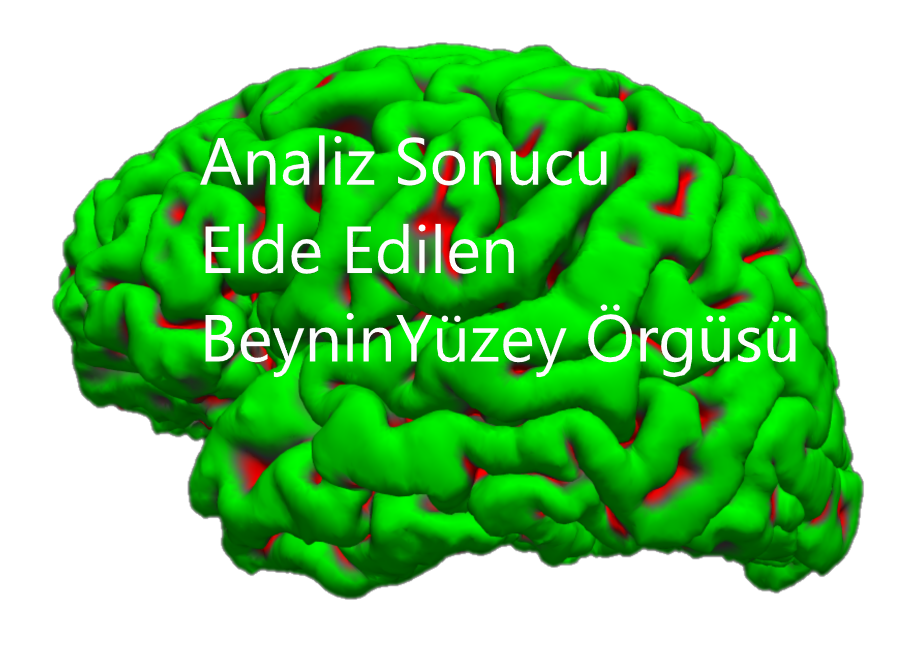
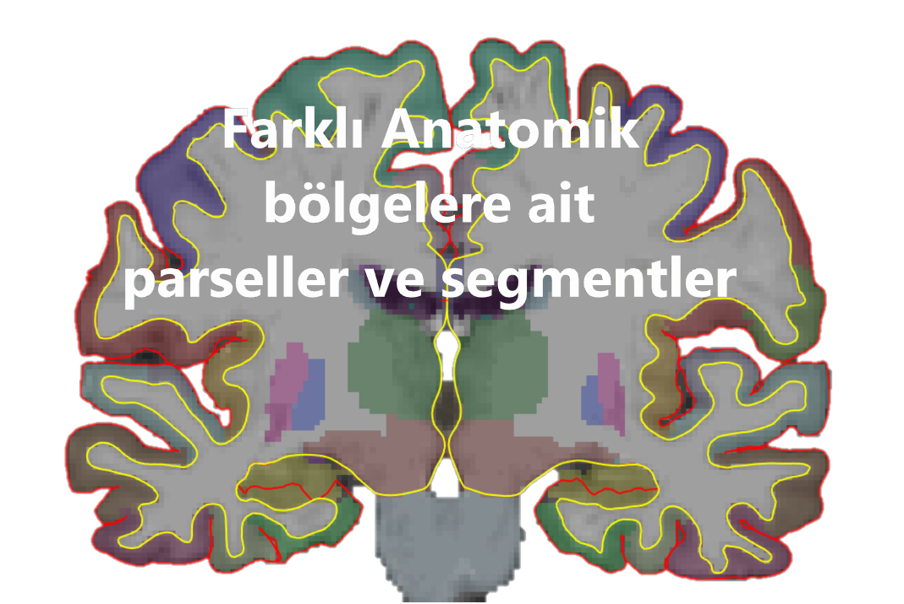

Freesurfer: Yüzey-temelli Korteks Kalınlığı Grup Analizi
Temmuz 2019
Freesurfer, yüksek çözünürlüklü yapısal kranyal MR görüntülerini parsel ve segmentlere ayırmakta kullanılan bir yazılım. Freesurfer analizi sonucunda parsellenmiş beyin yüzeyi ve segmentlenmiş beyin hacmi elde edilmekte. Analiz sırasında voksellerden oluşan MR görüntülerinin verteksleri içeren yüzey örgüsü de çıkarılmış oluyor. Yüzey örgüsü çok küçük üçgenlerle oluşturuluyor ve verteksler bu üçgenlerin köşeleri. Yüzey örgüsü gri madde yüzeyini (pial surface) temsil ediyor ve beyaz madde yüzeyi'ne (white matter surface) uzaklığı korteks kalınlığını ifade ediyor. Her verteks için bir kalınlık bilgisi de mevcut. Bu bilgiler ışığında beyindeki farklı anatomik bölgelere ait korteks kalınlığı bilgisini elde etmek mümkün. Burada, korteks kalınlığı hesaplamaları için grup analizinin nasıl yapıldığını bulacaksınız. İzleyeceğiniz yolu tarif eden kaynaklar mevcut. İndir: Grup analizi veya Freesurfer'ın tutorials sayfasından Grup Analizi kaynağı. Gene Freesurfer tutorial sayfasından Çoklu karşılaştırma kaynağı.
 
Korteks kalınlığı grup analizi aşamaları:
Öncelikle tabiki Freesurfer analizinin tamamlanmış olması gerekli. Bu arada recon-all komutunu -qcache opsiyonu ile çalıştırmadığınızı varsayıyorum.
Yapacağımız grup analizi için denek listesi, ait oldukları gruplar ve varsa kovaryatların tanımlanması gerekli. Bunun için bir text editörü kullanarak (Atom öneririm) fsgd isimli bir formatta bu bilgileri basit bir text dosyası olarak kaydediyoruz.
Örnek fsgd formatlı bilgileri aşağıda yazıyorum:
GroupDescriptorFile 1
Title HastaKontrolYasIQ
Class HastalarMD
Class Kontroller
Variables Yas IQ
Input HastaZB01 HastalarMD 10 1000
Input HastaAB02 HastalarMD 20 2000
Input HastaAK01 HastalarMD 30 1000
Input KontrTA01 Kontroller 40 2000
Input KontrCE02 Kontroller 50 2000
#Input Iptal01 Kontroller 60 2000Kalınlık dosyalarının Birleştirilmesi:
Şimdi mris_preproc komutu ile grup istatistiği yapacağımız denek verilerini tek dosyada birleştiriyoruz.
mris_preproc \
--fsgd HastaKontrolYasIQ.fsgd \
--hemi lh \
--meas thickness \
--target fsaverage \
--o lh.HastaKontrolYasIQ.thickness.mgh
mris_preproc \
--fsgd HastaKontrolYasIQ.fsgd \
--hemi rh \
--meas thickness \
--target fsaverage \
--o rh.HastaKontrolYasIQ.thickness.mghYüzeysel Yumuşatma:
Sırada yumuşatma (smoothing) var:
mri_surf2surf \
--hemi lh \
--s fsaverage \
--sval lh.HastaKontrolYasIQ.thickness.mgh \
--fwhm 20 \
--cortex \
--tval lh.HastaKontrolYasIQ.thickness.20.mgh
mri_surf2surf \
--hemi rh \
--s fsaverage \
--sval rh.HastaKontrolYasIQ.thickness.mgh \
--fwhm 20 \
--cortex \
--tval rh.HastaKontrolYasIQ.thickness.20.mghGLM analizi (mri_glmfit):
mri_glmfit \
--y lh.HastaKontrolYasIQ.thickness.20.mgh \
--fsgd HastaKontrolYasIQ.fsgd dods \
--C grup.fark.mtx \
--C grupXyas.mtx \
--C grupXiq.mtx \
--C grupXyasXiq.mtx \
--C Hepsi.yas.mtx \
--surf fsaverage lh \
--cortex \
--glmdir lh.HastaKontrolYasIQ.glmdir \
--eres-save
mri_glmfit \
--y rh.HastaKontrolYasIQ.thickness.20.mgh \
--fsgd HastaKontrolYasIQ.fsgd dods \
--C grup.fark.mtx \
--C grupXyas.mtx \
--C grupXiq.mtx \
--C grupXyasXiq.mtx \
--C Hepsi.yas.mtx \
--surf fsaverage rh \
--cortex \
--glmdir rh.HastaKontrolYasIQ.glmdir \
--eres-saveTasarım Matrisi:
Genel Lineer Model (GLM) analizinde, fsgd dosyasını (HastaKontrolYasIQ.fsgd) kullanarak Freesurfer bizim için tasarım matrisini oluşturacak. Bu aşamada Freesurfer tasarım matrisindeki grup bilgisi ve açıklayıcı değişkenler için bir tanımlama yapmamızı istiyor DODS ve DOSS modelleri. DODS: farklı ofset, farklı eğim. DOSS: farklı ofset, aynı eğim demek. Fsgd dosyasını kullanarak oluşturulacak tasarım matrisi DODS modelinde kurulduğunda her denek grubu için farklı lineer modeller tasarım matrisine eklenir, yani her grubun farklı ofset ve eğime sahip olacağı düşünülür. Yukarıdaki örnek üzerinden gidersek, hasta ve kontrollerin IQ değerini tasarım matrisinde iki farklı IQ sütununda tanımlayacak çünkü IQ'nun korteks kalınlığına etkisinin hasta ve kontrol için farklı bir temel seviyeden başlayıp farklı bir trent ile değiştiğini varsayıyor. DOSS seçtiğimizde ise IQ değerlerini tasarım matrisinde tek sütunda tanımlanıyor. Nasıl seçim yapılacağı hipotezimize kalmış. Fakat bizim örnekten gidsersek, Grup ve IQ interaksiyonuna bakacaksak kesin DODS kullanılmalı. Eğer bunlardan daha esnek bir tasarım matrisi kullanmak isterseniz --X ile kendi ürettiğinizi de verebilirsiniz.
Tasarım matrisinin DODS versiyonu: 1.HastalarMD 2.Kontroller 3.HastalarMD_Yas 4.Kontroller_Yas 5.HastalarMD_IQ 6.Kontroller_IQ
+1.00000 +0.00000 +10.00000 +0.00000 +1000.00000 +0.00000
+1.00000 +0.00000 +20.00000 +0.00000 +2000.00000 +0.00000
+1.00000 +0.00000 +30.00000 +0.00000 +1000.00000 +0.00000
+0.00000 +1.00000 +0.00000 +40.00000 +0.00000 +2000.00000
+0.00000 +1.00000 +0.00000 +50.00000 +0.00000 +2000.00000Tasarım matrisinin DOSS versiyonu: 1.HastalarMD 2.Kontroller 3.Yas 4.IQ
+1.00000 +0.00000 +10.00000 +1000.00000
+1.00000 +0.00000 +20.00000 +2000.00000
+1.00000 +0.00000 +30.00000 +1000.00000
+0.00000 +1.00000 +40.00000 +2000.00000
+0.00000 +1.00000 +50.00000 +2000.00000Kontrast Tanımlama:
Yapacağımız karşılaştırmalar için gerekli kontrast vektörlerini tanımlayalım ve text olarak kaydedelim. Örnek olarak DODS ile devam ediyoruz. Elimizdeki tasarım matrisinin 6 açıklayıcı değişkeni olduğu için her kontrast dosyasında 6 değer giriyoruz. Tek satır girersek t-test sonucu verir. İki satır girersek F-test sonucu verir.
Gruplar arasında, Yaş ve IQ dışlandığında, korteks kalınlığında fark var mı? grup.fark.mtx
1 -1 0 0 0 0Grup yaş ilişkisi; IQ dışlandığında, Grupların korteks kalınlıklarında Yaştan etkilenme açısından fark var mı? grupXyas.mtx
0 0 1 -1 0 0Grup IQ ilişkisi; Yaş dışlandığında, Grupların korteks kalınlıklarında IQ'dan etkilenme açısından fark var mı? grupXiq.mtx
0 0 0 0 1 -1Grup Yaş IQ ilişkisi; Grupların korteks kalınlıklarında IQ ve Yaş'dan etkilenme açısından fark var mı? grupXyasXiq.mtx
0 0 1 -1 0 0
0 0 0 0 1 -1Yaş etkisi; Grup ve IQ dışlandığında, Tüm deneklerin korteks kalınlıkları Yaştan etkilenme açısından 0'dan farklı mı? Hepsi.yas.mtx
0 0 0.5 0.5 0 0Sonuçların Gösterimi:
Şimdi sonuçları görselleştiriyoruz: Sonuçların olduğu glm klasörünün ismini biz verdik, ayrıca glm klasöründe, her kontrast için kontrast dosyamızın adında bir altklasör de açıldı. Bu kontrast alt klasöründe istersek çoklu karşılaştırma düzeltmesi yapılmamış belirginlik (significance, -log10(pvalue)) haritası olan sig.mgz dosyasını kullanabiliriz. Arkaplanına ise fsaverage şablonunu koyuyoruz.
freeview -f $SUBJECTS_DIR/fsaverage/surf/lh.inflated:annot=aparc.annot:annot_outline=1:overlay=lh.HastaKontrolYasIQ.glmdir/grup.fark/sig.mgh:overlay_threshold=4,5 \
-viewport 3d \
-layout 1